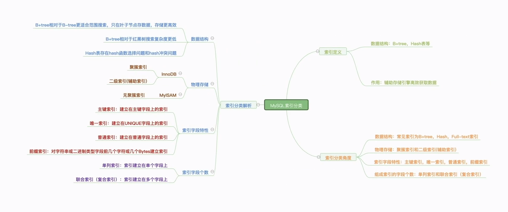
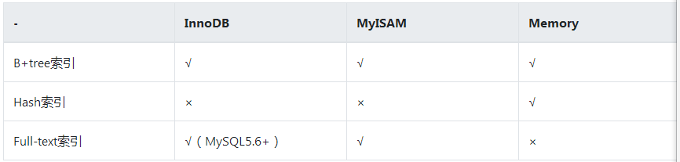
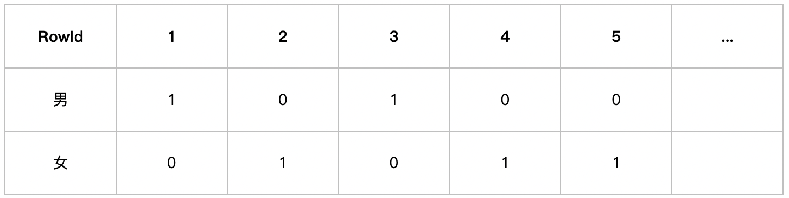
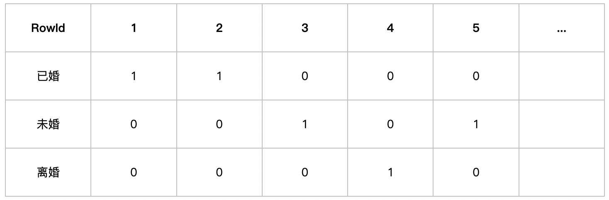

什么是索引？
正常使用 select
需要对表中所有元素进行遍历，效率极低，而索引是对数据库中列进行有序化的数据结构，使用其可以快速访问特定信息
索引优点
- 通过创建唯一性索引，可以保证数据库表中每一行数据的唯一性；
- 可以加快数据的检索速度，这也是创建索引的主要原因；
- 可以加速表和表之间的连接，特别是在实现数据的参考完整性方面特别有意义；
- 通过使用索引，可以在查询的过程中，使用优化隐藏器，提高系统性能。
索引缺点
- 时间上，创建和维护索引都要耗费时间，这种时间随着数据量的增加而增加，具体地，当对表中的数据进行增加、删除和修改的时候，索引也要动态的维护，这样就降低了数据的维护速度；
- 空间上，索引需要占物理空间，除了数据表占数据空间之外，每一个索引还要占一定的物理空间，如果要建立聚簇索引，那么需要的空间就会更大。
按数据结构分类

注：InnoDB实际上也支持Hash索引，但是InnoDB中Hash索引的创建由存储引擎引擎自动优化创建，不能人为干预是否为表创建Hash索引
BTREE 索引
B 树也称 B- 树，它是一颗多路平衡查找树，相较于红黑树这种平衡树，其树的高度更低，这也意味着磁盘 IO 的次数更少
B+ 树是其的 plus 版本，常用于数据库索引（InnoDB 默认），具有 B 树的平衡性，同时节点间通过双向链表提高了区间查询的性能
B+tree 非叶子节点只存储键值信息， 数据记录都存放在叶子节点中。而B-tree的非叶子节点也存储数据。所以 B+tree 单个节点的数据量更小，在相同的磁盘I/O次数下，能查询更多的节点。
位图索引
适用于字段取值范围小的情况，如：性别，婚姻状况
- 不使用索引
不使用索引时，数据库只能一行行扫描所有记录，然后判断该记录是否满足查询条件。 - BTREE 索引
对于性别，可取值的范围只有'男','女'，并且男和女可能各站该表的50%的数据，这时添加B树索引还是需要取出一半的数据， 因此完全没有必要。相反，如果某个字段的取值范围很广，几乎没有重复，比如身份证号，此时使用B树索引较为合适。事实上，当取出的行数据占用表中大部分的数据时，即使添加了B树索引，数据库如oracle、mysql也不会使用B树索引，很有可能还是一行行全部扫描。
那位图索引呢，通过位向量形式表示
性别：

其中 1 表示为男，否则为女，则位图索引生成两个向量
男向量：10100
女向量：01011
对于婚姻状况这一列，位图索引生成三个向量，已婚为11000...，未婚为00100...，离婚为00010...

select * from <table> where gender="男" and marriage="未婚"
取出男向量 10100，未婚向量 00100 进行 AND 操作，结果为 00100，第三行为结果
hash 索引
哈希索引通过 hash 算法（直接定址法，平方取中法，折叠法，除数取余法，随机数法）将数据转换为 hash 的 key，对应的 value 为数据，MySQL 中只有 Memory 引擎显式的支持哈希索引，这也是Memory引擎表的默认索引结构，Memory同时也支持B-Tree索引。并且，Memory引擎支持非唯一哈希索引，当发生 hash 冲突时，使用拉链法解决
InnoBD引擎有一个特殊的功能叫“自适应哈希索引”。当InnoDB注意到某些索引值被使用得非常频繁时，它会在内存中基于B-Tree索引之上再创建一个哈希索引，这样就让B-Tree索引也具有哈希索引的一些优点，比如快速的哈希查找。但这是一个完全自动的、内部的行为，用于无法控制，但用户可以选择完全关闭该动能。
在使用InnoBD引擎时，我们可以在B-Tree的基础上创建一个伪哈希索引。当然这不是真正的哈希索引，因为还是使用的B-Tree进行查找，但它使用哈希值而不是键本身进行索引查找。
例如，如果需要存储大量的URL并且需要根据URL进行查找，如果使用B-Tree来存储URL，则存储的内容就会很大，因为URL本身就很长。为此，我们可以单独指定一个哈希列并为该列创建索引，并选择一个哈希函数！每次存储、变更URL时，对该URL应用一个函数计算出一个哈希值，存入对应的哈希列中。
在查询时，如果采用体积很小的基于哈希值的索引来查找，则性能会提升很多，唯一的缺点就是需要调用一个哈希函数，为此我们可以使用触发器来实现。
如果出现了哈希冲突，则查询会返回多行数据，为此在查询时还必须带上真正的URL常量值。正确的查询语句为：
select xx from url
where url_hash = hash('https://www.baidu.com/') AND url = 'https://www.baidu.com/';优点
查询速度极快，平均为 \(\mathcal{O}(1)\)
缺点
- 只能用于等值查询，如 =, !=, IN，由于本身的数据结构，像范围查询（BETWEEN），模糊查询（LIKE）都是用不了的
- 不能排序，哈希表是无序的
- 不支持部分索引列查询，如对（A，B）建立索引，若查询只有 A，则无法用索引
- 仍需要回表查询
由于可能发生哈希冲突，需要将数据与数据库中的数据比较 - 哈希表负载因子高了，性能会降低
所以其使用场景很小
按物理存储分类
区别：聚簇索引节点存放行记录数据，而非聚簇索引存放指针
聚簇索引
也称聚集索引，根据每张表的主键构造一颗 B+
树，叶子结点存放行记录数据
InnoDB
表要求必须有聚簇索引，默认在主键字段上建立聚簇索引，在没有主键字段的情况下，表的第一个非空的唯一索引将被建立为聚簇索引，在前两者都没有的情况下，InnoDB
将自动生成一个隐式的自增 id 列，并在此列上建立聚簇索引。 以 MyISAM
为存储引擎的表不存在聚簇索引。
优点：
- 速度快，因为其将数据直接存在结点上，少了一次查询
- 数据逻辑上连续（物理上不连续），区间查询很快
页间使用双向链表，页内使用单向链表来实现顺序性
非聚簇索引
也称二级索引，辅助索引，叶子结点存放的是数据的指针
按字段特性分类
普通索引
普通索引就是最最基础的索引，这种索引没有任何的约束作用，它存在的主要意义就是提高查询效率。
唯一性索引
在普通索引的基础上加上唯一性约束
主键索引
在唯一性索引的基础上加上非空约束
全文索引
对内容进行分词， MySQL 中少用（5.6 版本后支持）
前缀索引
对字符类型字段的前几个字符或 bytes 建立索引，而不是整个字段，大大减少索引占用空间，也提高了查找效率，关键在于建立多长的前缀使得查到的数据冲突少，但同时也会带来空间的开销
按字段个数分类
单列索引
对单个列进行索引
联合索引
对多个列进行索引，又称复合索引，组合索引，使用最左前缀原则匹配
最左前缀原则：
进行匹配，必须按照组合索引从左往右添加 where
条件，当遇到范围查询，如：<, >, between, like 等就会停止匹配
- 像对 (a, b, c) 建立索引，查询条件 a / ab / abc 会走索引，使用 bc
不会索引
因为a全局有序，b是局部有序，只有a确定了，b才能有序 - 如
where a=1 and b>2 and c=3时，b进行了范围查找，此时c用不了索引
覆盖索引的情况
当数据在二级索引且为联合索引中找到时，不需要回表查询， 可以用Explain命令查看SQL语句的执行计划，执行计划的Extra字段中若出现Using index，表示查询触发了索引覆盖。
如：
CREATE TABLE `student` (
`id` int(11) NOT NULL AUTO_INCREMENT COMMENT '自增主键',
`name` varchar(32) COLLATE utf8_bin NOT NULL COMMENT '名称',
`age` int(3) unsigned NOT NULL DEFAULT '1' COMMENT '年龄',
PRIMARY KEY (`id`),
KEY `I_name` (`name`)
) ENGINE=InnoDB;
INSERT INTO student (name, age) VALUES("小赵", 10),("小王", 11),("小李", 12),("小陈", 13);
ALTER TABLE student ADD INDEX I_name_age(name, age);
SELECT age FROM student WHERE name = '小李'；name, age 组成联合索引，where 中对
name 进行查找，select 返回
age，其存在于联合索引，不需要回表，故为覆盖索引
什么时候不该建立索引？
索引虽好，但由于本身会带来空间上的开销，增删改操作也会变慢，所以有一些情况不适合建立索引
- where 条件中用不到的字段不适合
- 表记录很少只有几百条
- 需要经常增删改，需要评估是否适合加索引
- 参与列计算的列不适合
- 区分度不高的字段不适合，如：性别（男，女，未知三个值），加了索引效率也不会太高，
select会有多个值
ps：可以使用位图索引